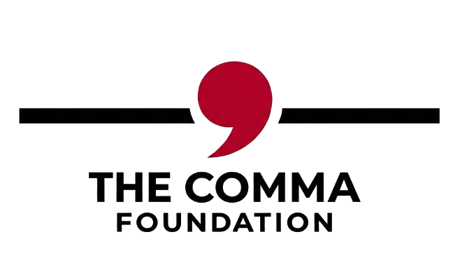

The Comma Foundation exists for people who are already doing the work. We serve returning citizens committed to a different chapter, the families who never stopped believing in them, and the working people one crisis away from losing everything — while demanding the systemic changes that make second chances real.
"A comma doesn't end the sentence, it means there's more to say. We serve the people who keep going."
We don't serve statistics. We serve people. The ones who decided — quietly, without applause — that their story wasn't finished.
The Comma Foundation removes the last barrier between where you are and where you were always supposed to be. We invest in people who never stopped believing — and remove the specific obstacle standing between them and the next chapter.
The system doesn't get the last word. We make sure of that — one person and one policy at a time.
The parent who shows up every day without applause. Working, grinding, one emergency away from losing everything they've built. We remove the obstacle — not because it's easy, but because they never stopped.
The family that refused to let distance become disconnection. Holding on through sentences, through systems, through silence. We make sure the people they're waiting for know someone is waiting with them.
The returning citizen who walked out with nothing but a commitment to a different chapter. No clear pathway. No clean slate. Just the decision to keep going — and the refusal to let a past define a future they're actively building. We go with them.
The child who deserves world-class experiences regardless of their zip code, their parent's case number, or what the system decided about their family. Potential doesn't care about circumstance. Neither do we.
Each program targets a specific population with focused, measurable impact. Built for real people in real situations.
One emergency shouldn't end a story that's still being written. For working families one crisis away from losing everything — rent, utilities, a car repair that means the difference between a job and no job — we step in. Not as a handout. As the comma between where you are and where you're going.
Homeownership isn't a dream for the people we serve. It's the next logical step for a parent who never stopped working toward something better. We provide the financial literacy, the connections, and the partnerships that turn that step from impossible to inevitable.
A child's potential has never belonged to their zip code. We give children access to world-class experiences, mentors, and opportunities that have nothing to do with their address and everything to do with who they are becoming. The system drew the boundary. We ignore it.
A prison sentence shouldn't silence a parent. We keep that voice alive — in toys and gifts delivered for the holidays, in live streams of their children's games, in personal messages that arrive when they matter most. And when the sentence ends, we make sure they're ready — with the career and occupational training that turns release into a real starting point.
Addiction doesn't ask permission before it takes everything — a job, a family, a future someone was already fighting for. We provide drug education, treatment connections, and recovery support for individuals and families working to reclaim what substance use has cost them. Not judgment. Not a lecture. A reset button, and someone standing next to you while you press it.
Richard L. Crosby III has sat on every side of this system. As a Top 100 criminal defense attorney in Ohio, he stood in courtrooms fighting for people the system had already written off. As a congressional candidate, he learned firsthand how policy shapes lives long before it reaches the people living them. And as a man who spent 784 days fighting his way back — he knows exactly what it costs when the system decides your sentence is your story.
The Comma Foundation was not built by someone who read about these problems. It was built by someone who lived them, fought them professionally, and refused to stop when it became personal.
The programs designed to prepare people for reentry are largely performative — disconnected from the real barriers people face the moment they walk out. We are pushing for evidence-based, outcome-driven programming that begins inside the facility and follows people home. Preparation for release should not be an afterthought. It should be the entire point.
Accurate release dates, honest good time calculations, and full accountability from the Bureau of Prisons. Inmates and their families deserve to know exactly when they're coming home.
Ohio's 2023 expansion of record-sealing eligibility under Senate Bill 288 proved that meaningful reform is possible when lawmakers choose it. We are using that law today, not waiting for permission — clearing records, one petition at a time, for residents the system left behind.
States have shown what's possible. The federal system hasn't. For qualifying offenses, rehabilitation without a clean slate isn't rehabilitation. Earning a second chance should be possible everywhere a debt has already been paid — not just in the states willing to lead.
A criminal record shouldn't be an automatic disqualification from a job application or a lease. We are pushing for fair chance hiring and housing policies that require an individual assessment — not a checkbox that ends everything before it starts. A second chance on paper means nothing if the record itself still slams every door.
This isn't advocacy for sympathy. It's a demand for a system that matches its own rhetoric.

When I needed a hand, I watched people count me out. Friends. Mentors. Colleagues. People I loved and trusted wrote the period before the sentence was finished.
For 784 days I sat inside a cell and thought — this isn't how my story goes. This isn't how a story ends.
Very few people continued to show up when the math said walk away. I will never forget them. And I vowed to be that person for someone else who may think they've been forgotten.
I didn't build The Comma Foundation because I have all the answers. I built it because I know exactly what it feels like to need one person to believe the story isn't finished.
I also built it because I know what the system looks like from every angle — as the attorney in the courtroom, as the candidate on the trail, and as the man in the cell. I have seen the gaps up close. I have lived in them. And I have decided that seeing them and staying quiet is not something I'm willing to do.
Yours isn't finished either.
— Richard L. Crosby III, J.D. | Founder, The Comma Foundation
Every comma needs someone holding the pen.
Every dollar is a comma in someone's story. Your contribution funds direct assistance, program delivery, and the policy fight that makes individual help mean something beyond one person at a time.
DONATE NOWWe need people as committed as the families we serve. If you show up, follow through, and believe that potential doesn't have a zip code — there's a role here for you.
GET INVOLVEDYou know someone who never stopped. Someone who is doing the work quietly, without applause, and could use a hand getting to the next line. Tell us about them.
SUBMIT A NAME